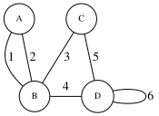
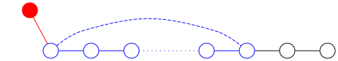

Walk, Trail, Path, Extremal¶
Everything we've seen about graphs so far hasn't been fundamentally different from common mathematical structures like lists and sets. But with the definitions in this section, we can prove theorems that would appear extremely complex without using graphs.
Walk¶
A sequence like \(v_1e_1v_2e_2...v_{k-1}e_{k-1}v_k\) is called a walk if and only if the v's are vertices, the e's are edges, and each edge is placed between its corresponding vertices. If we imagine the graph as a city where edges are roads, the movement of a creature in this city forms a walk.
If the start and end vertices of the walk are the same (the creature returns to its starting point), we call it a closed walk.
{kind=link}

In the above graph, \(a1b4d6d\), \(b1a1b2a1b3c\), and \(a1b4d5c3b4d4b2a\) are examples of walks. The last walk is a closed walk. The length of a walk is defined as the number of its edges. The above walks have lengths 3, 5, and 7 respectively. If the graph is simple, listing the vertex sequence would suffice, and there would be no need to name edges or include them in the walk definition.
Trail¶
A trail is a walk with no repeated edges. A trail whose start and end vertices are the same is called a closed trail.
In the above graph, \(a1b4d6d\) and \(a1b4d5c3b2a\) are examples of trails. The latter trail is a closed trail.
Cycle and Path¶
A path is a walk with no repeated vertices. Clearly, every path is also a trail. By definition, a path cannot have identical start and end vertices (except for single-vertex paths or zero-length paths). However, if a walk has only its start and end vertices repeated, we call it a cycle. Single-vertex walks (zero edges or zero length) are not considered cycles. In a simple graph, cycles of length 1 or 2 do not exist.
In the above graph, \(a1b3c5d\) is a path, while \(a1b2a\), \(d6d\), and \(b3c5d4b\) are cycles.
Examples¶
Although the above definitions are simple, they greatly assist in proving graph theorems. Let's examine a few examples.
If there exists a walk between two vertices, there exists a path between them¶
By "walk between two vertices u and v", we mean a walk starting at u and ending at v. To prove this claim, consider the walk with the fewest edges among all walks between these two vertices. This walk must be a path, because if it had repeated vertices (i.e., a walk of the form):
then a shorter walk would exist (the sub-walk):
which contradicts our minimality assumption.
If all vertices have degree at least 2, the graph contains a cycle¶
Cycle-free graphs have interesting properties that we'll explore extensively in Chapter 2. For now, we rely on the theorem stating that any cycle-free graph must contain a vertex with degree less than 2.
To prove this, consider the longest path (the path with the maximum number of edges) in the graph. Note that if we considered the longest walk instead, our reasoning might be invalid as infinite walks could exist. However, since any path has at most n vertices and thus n-1 edges, we can always find a longest existing path.
The starting vertex of this path cannot have edges to vertices outside the path (e.g., a red vertex), as this would create a longer path. Therefore, all edges from this vertex must be within the path. Since its degree is at least 2, it must connect to another vertex in the path besides its immediate neighbor (dashed edge), creating a cycle.
{kind=link}

Edges of any graph with all even degrees can be partitioned into cycles¶
If the graph has no edges, the statement is trivially true. Otherwise, ignoring degree-0 vertices, the previous theorem guarantees the existence of a cycle. Take this cycle as part of the partition, remove it, and note that removing the cycle reduces the degree of each involved vertex by 2, preserving even degrees. Repeat this process until all edges are removed, resulting in the desired cycle partition.
Additional Definitions¶
Length of a walk: As mentioned, the number of edges in a walk defines its length. This extends to trails and paths. For example, the path graph \(P_n\) has length \(n-1\).
Distance between two vertices: The length of the shortest path between two vertices. If no path exists, the distance is defined as infinite.
Girth of a graph: The length of the shortest cycle with more than 2 vertices. If the graph has no cycles, its girth is infinite.
Hamiltonian path/cycle: A path or cycle that includes all vertices of the graph.
This book is made by The Shaazzz contributors.
It is publicly available with cc-by-sa license.
Last updated at فوریه 23, 2025.
Rendered by Sphinx (7.2.6) and Minoo theme (Beta 0.9.7).